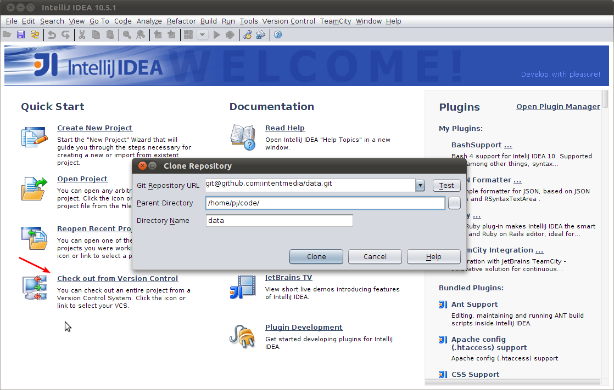
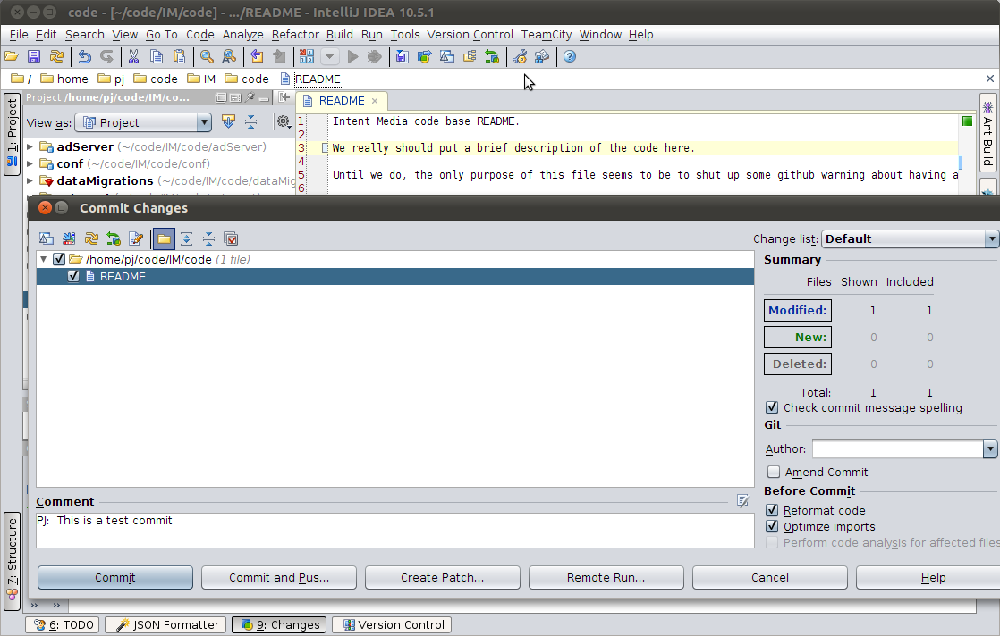
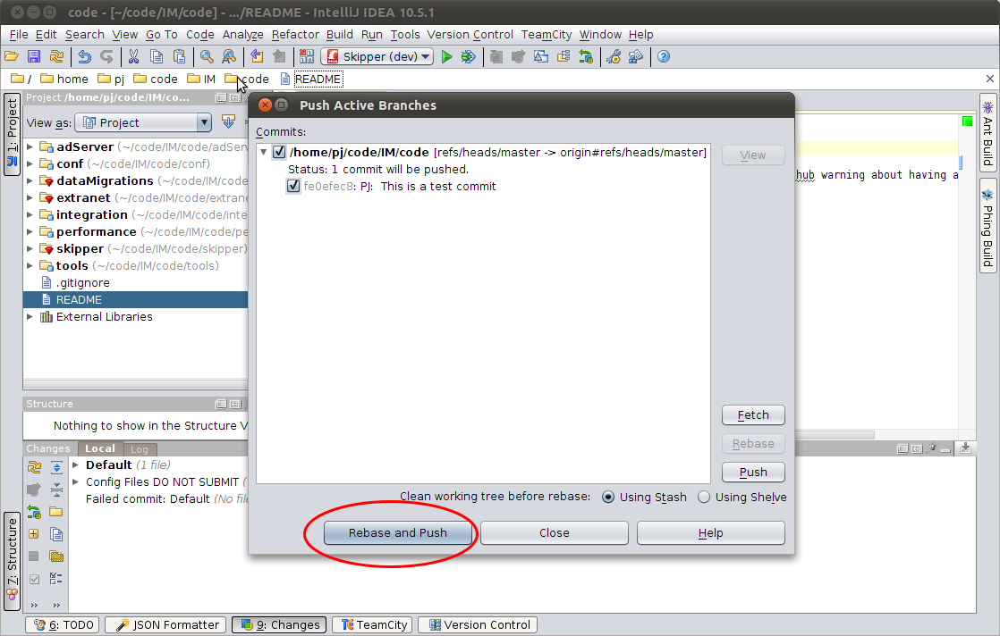
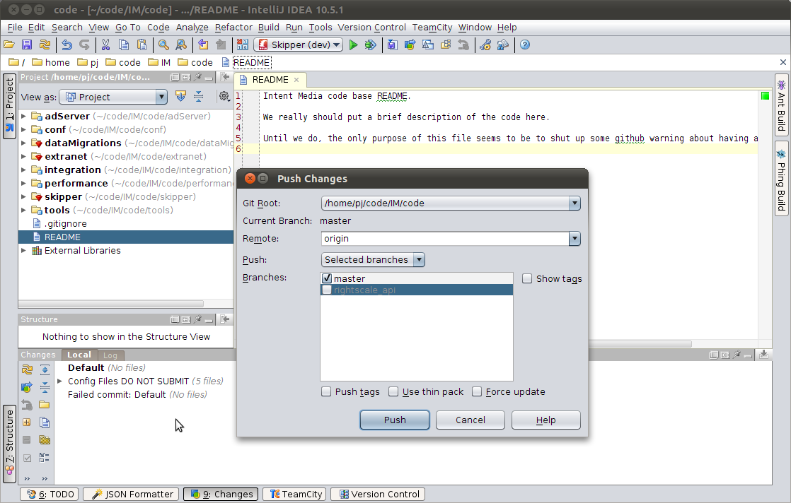
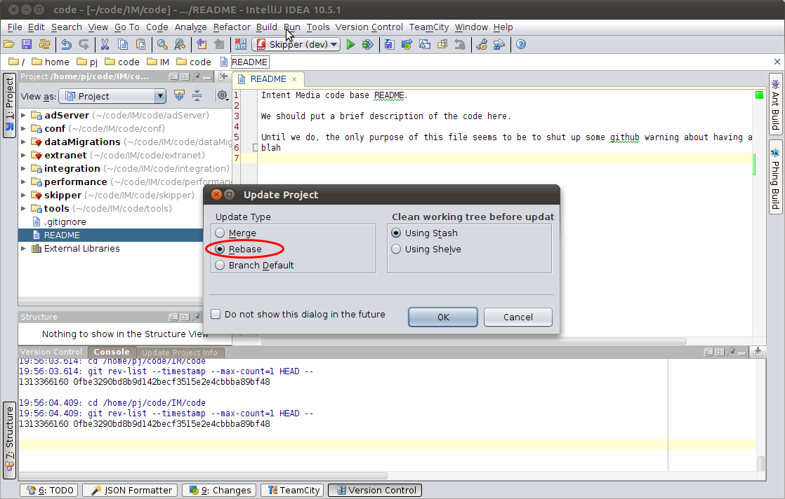
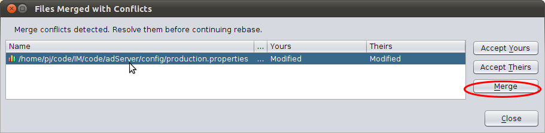
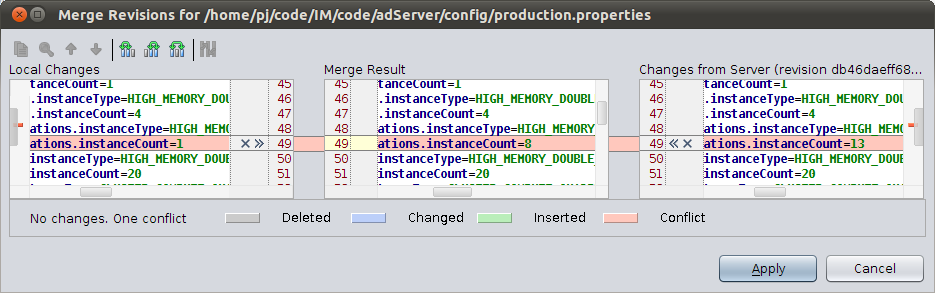
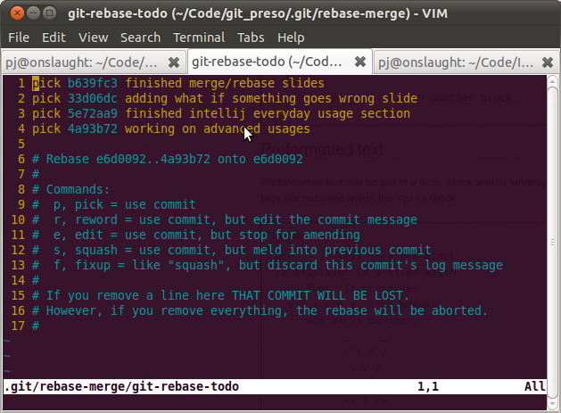
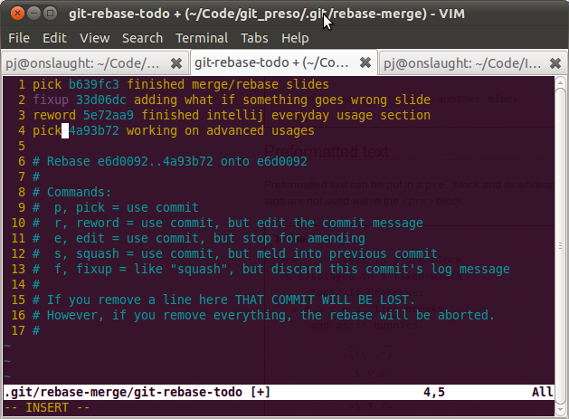

Git @ Intent Media
Agenda
- Git Basics
- Everyday Git with Intellij
- Advanced Usages
Git Basics
What is Git?
- Git is a Distributed Version Control System
- This means the entire history is not only on GitHub but also on everyone’s machine.
- This also means that commiting your changes and pushing them are two different things.
Git Basics
Checking out the code
$ git clone git@github.com:intentmedia/code.git
Initialized empty Git repository in /home/pj/Code/IM/data/.git/
remote: Counting objects: 738, done.
remote: Compressing objects: 100% (396/396), done.
remote: Total 738 (delta 336), reused 680 (delta 279)
Receiving objects: 100% (738/738), 177.44 KiB, done.
Resolving deltas: 100% (336/336), done.
$Git Basics
Checking out the code – Intellij

Git Basics
Checking in your changes
$ echo 'Adding this to the README' >> README
$ git add README
$ git commit --message 'This is an example of a commit'
$ git push
Counting objects: 5, done.
Delta compression using up to 6 threads.
Compressing objects: 100% (2/2), done.
Writing objects: 100% (3/3), 313 bytes, done.
Total 3 (delta 1), reused 0 (delta 0)
To git@github.com:pgroudas/git_preso.git
23cc04d..e076226 gh-pages -> gh-pagesGit Basics
Checking in your changes – Intellij ⌘+k

Git Basics
Checking in your changes – Intellij ⌘+k

Git Basics
Pushing your changes – Intellij

Git Basics
Pulling the latest upstream changes
Working tree must be clean!
$ git pull --rebase
First, rewinding head to replay your work on top of it...
Fast-forwarded master to db46daeff68ab4d58283cc5f504baceb7193a4fa.Git Basics
Pulling the latest upstream changes – Intelij ⌘+t
Handles your unclean working tree for you!



Everyday Git with Intellij
Update code frequently with ⌘+t and select Rebase update type
- This keeps a linear and simple revision history that is easy to understand
Commit with ⌘+k and you generally want to push at the same time
- If it prompts you saying that you are behind, select rebase and push
What to do if something goes wrong?
Most common problems occur while pulling down upstream changes
- Check the Version Control Console for detailed output

What to do if something goes wrong?
Just like any version control system, if multiple users are editing the same files, occasionally you have to resolve conflicts. Intellij is actually pretty sane about dealing with conflicts and prompts you to resolve them when you update.


What to do if something goes wrong?
You can always revert to the state prior to the rebase operation if you mess up the merge.
- Type
git rebase --abortat the command line - Version Control > Git > Abort Rebasing in Intellij menu
You can also use Intellij’s merge tool to solve problems you get yourself into on the command line
pj@onslaught:~/Code/IM/code$ git pull --rebase First, rewinding head to replay your work on top of it... Applying: PJ: This is a test commit Using index info to reconstruct a base tree... Falling back to patching base and 3-way merge... Auto-merging adServer/config/production.properties CONFLICT (content): Merge conflict in adServer/config/production.properties Failed to merge in the changes. Patch failed at 0001 PJ: This is a test commitWhen you have resolved this problem run "git rebase --continue". If you would prefer to skip this patch, instead run "git rebase --skip". To restore the original branch and stop rebasing run "git rebase --abort".
Merge tool is accessible via Version Control > Git > Merge Tool
Agenda
Git BasicsEveryday Git with Intellij- Advanced Usages
Advanced Usages
“With great power comes great responsibility.” -Stan Lee
Advanced Usages
Seriously, you should probably skim the git community book if you want to use the more advanced features.
Advanced Usages
Feature branches – Idea
- Branch when you start a feature
- Check in locally as you develop it.
- When finished, merge back into master and push upstream
Advanced Usages
Feature branches – Benefits
masterbranch remains pristine locally.- Can checkin frequently even if just a wip without breaking the build.
- Can work on multiple features in separate branches independently.
- All check-ins for a given feature are pushed at once (easier to review)
Advanced Usages
Feature branches – Downsides
- More complex (but still possible) to maintain linear history in
master - Promotes longer development ‘in a vacuum’
Advanced Usages
Feature branches – Commands
- create a branch
git branch <branchname>- switch into branch
git checkout <branchname>- create and switch into branch
git checkout -b <branchname>- pull in new changes from master
git rebase master <branchname>- merge changes back to master
git checkout master; git merge --ff-only <branchname>
Advanced Usages
Interactive Rebase – Idea
You may occasionally accumulate a small number of commits locally before you share them. Interactive rebasing allows you the oppurtunity to clean up the commits in a number of ways before you push them up stream.
Advanced Usages
Interactive Rebase – Benefits
- Squash multiple commits into one
- Rewrite your commit messages
- Group the changed files differently
Advanced Usages
Interactive Rebase – Example

Advanced Usages
Interactive Rebase – Example

If you ever need help
- Campfire
- Intellij Git Integration
- github:help
- git community book
- git man pages available via
git helpcommand in terminal